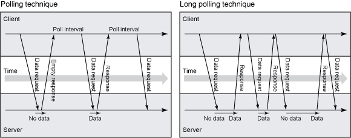

first slide
Traditional techniques

In long pooling, server keeps the GET request open until new content has arrived.
| Pros | Cons |
|---|---|
| HTTP over standard ports = full browser support | Significant server overhead |
| Blocking IO |
Extremely simple
//Server side (eg. Rails/PHP/node.js)
res.writeHead 200,
'Content-Type': 'text/event-stream'
'Cache-Control': 'no-cache'
'Connection': 'keep-alive'
res.write 'retry: 10000\n'
res.write 'event: aveiro_stocks\n'
res.write 'data: ' + 1298.08 + '\n\n'
//client side
source = new EventSource("stream");
source.addEventListener("aveiro_stocks", function(event) {
console.info(event);
}, false);ws://, special serverMuch more fancy, helper library required
//Server side (eg. nodejs-websocket)
var server = ws.createServer(function (conn) {
console.log("New connection")
conn.on("text", function (str) {
console.log("Received "+str)
conn.sendText(str.toUpperCase()+"!!!")
})
conn.on("close", function (code, reason) {
console.log("Connection closed")
})
}).listen(8001)
//client side
connection = new WebSocket("ws://localhost:8081")
connection.onmessage = function (event) {
console.log(event);
}CREATE TABLE activity_feeds (
id INT PRIMARY KEY NOT NULL,
title CHAR(50),
performed_at TIMESTAMP DEFAULT now()
); CREATE OR REPLACE FUNCTION notify_activity_insert()
RETURNS trigger AS
$$
DECLARE
BEGIN
PERFORM pg_notify('activity_feed', row_to_json(NEW)::TEXT);
RETURN new;
END;
$$ LANGUAGE plpgsql;CREATE TRIGGER activity_feed_trigger
AFTER INSERT ON activity_feeds
FOR EACH ROW EXECUTE PROCEDURE notify_activity_insert();dbclient = new pg.Client(pg.defaults)
dbclient.connect()
dbclient.query "LISTEN \"" + "activity_feed" + "\""
dbclient.on "notification", (data) ->
console.log data